Candidate List 20260417 Previous Day Next Day Section 1: New Sources (age<1d) Cosmological Afterglow
Section 2: Old (1-5d) sources observed last night placeholder
Section 1: New Afterglow/FBOT Cands Last Night (1)
1. ZTF26aasxacc (Afterglow?) [Back to Top] [Share] [Trigger Swift] [Fritz ] [Lasair ]RA, Dec: 160.86825, -16.65425 10h43m28.38s, -16d-39m-15.29sGalactic (l, b): 263.87757, 36.33307 ext(g-r) = 0.048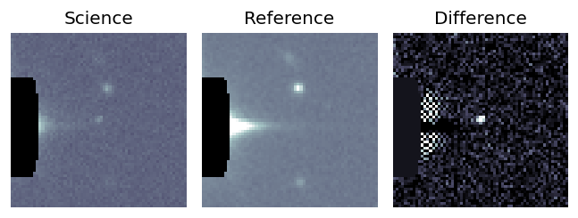
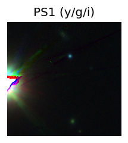
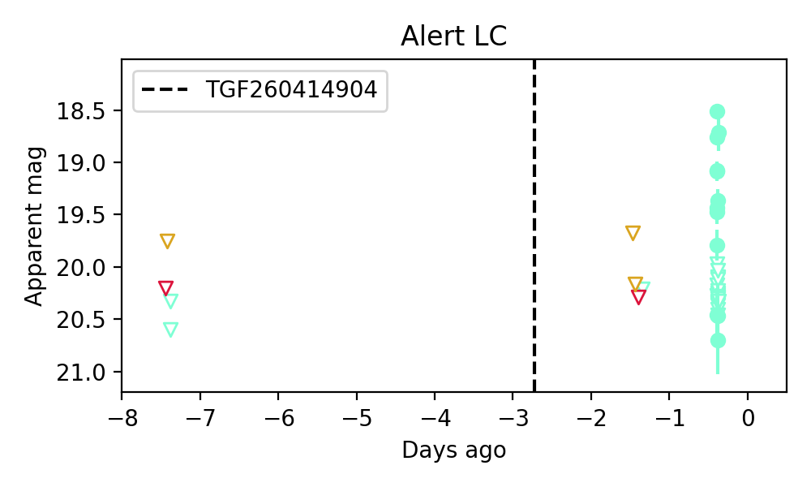
Section 2: Older Sources Observed Last Night (14)
0. ZTF26aasjvhc (Afterglow?) [Back to Top] [Share] [Trigger Swift] [Fritz ] [Lasair ]RA, Dec: 251.73161, 62.40135 16h46m55.59s, 62d24m4.87sGalactic (l, b): 92.66379, 38.11506 ext(g-r) = 0.021LegacySurvey: 1 sources in 3 arcsec Closest: d = 4.98 arcsec, 291.1 deg (east of north) photoz=0.13 (68% bounds 0.05, 0.81), type=PSF peak abs mag = -21.46 (68% bounds -19.43, -26.03)
1. ZTF26aasmsqg (Afterglow?) [Back to Top] [Share] [Trigger Swift] [Fritz ] [Lasair ]RA, Dec: 215.41628, 13.22955 14h21m39.91s, 13d13m46.39sGalactic (l, b): 4.01892, 64.74857 ext(g-r) = 0.025LegacySurvey: 1 sources in 3 arcsec Closest: d = 7.08 arcsec, 47.0 deg (east of north) photoz=0.41 (68% bounds 0.27, 0.53), type=PSF peak abs mag = -25.53 (68% bounds -24.52, -26.2) Consistent with synchrotron, g-r>0!
2. ZTF26aasmtpq (FBOT?) [Back to Top] [Share] [Trigger Swift] [Fritz ] [Lasair ]RA, Dec: 227.12925, 70.44401 15h 8m31.02s, 70d26m38.45sGalactic (l, b): 108.11486, 42.52149 ext(g-r) = 0.019LegacySurvey: 1 sources in 3 arcsec Closest: d = 0.55 arcsec, 195.4 deg (east of north) photoz=0.89 (68% bounds 0.66, 1.09), type=PSF peak abs mag = -24.29 (68% bounds -23.48, -24.83)
3. ZTF26aasmtwn (FBOT?) [Back to Top] [Share] [Trigger Swift] [Fritz ] [Lasair ]RA, Dec: 230.47259, 46.59723 15h21m53.42s, 46d35m50.03sGalactic (l, b): 76.46447, 54.65816 ext(g-r) = 0.024peak abs mag = -19.59 LegacySurvey: 1 sources in 3 arcsec Closest: d = 0.90 arcsec, 146.6 deg (east of north) photoz=0.27 (68% bounds 0.2, 0.37), type=EXP peak abs mag = -21.2 (68% bounds -20.55, -22.05) Consistent with synchrotron, g-r>0!
4. ZTF26aasmvvi (FBOT?) [Back to Top] [Share] [Trigger Swift] [Fritz ] [Lasair ]RA, Dec: 241.70804, 32.58553 16h 6m49.93s, 32d35m7.91sGalactic (l, b): 52.5773, 47.64991 ext(g-r) = 0.046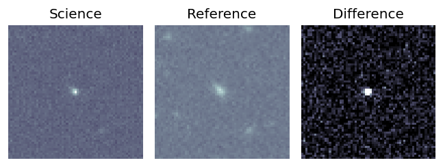
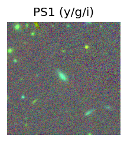
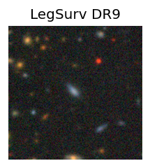
peak abs mag = -19.67 LegacySurvey: 1 sources in 3 arcsec Closest: d = 1.01 arcsec, 51.7 deg (east of north) photoz=0.09 (68% bounds 0.06, 0.13), type=EXP peak abs mag = -19.16 (68% bounds -18.12, -19.94) 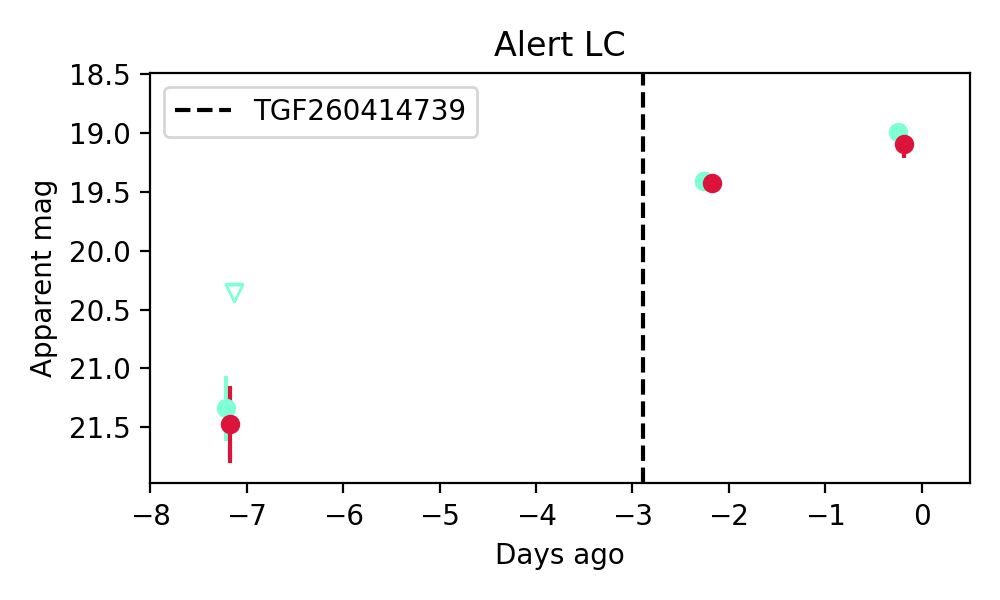
5. ZTF26aasnlpp (FBOT?) [Back to Top] [Share] [Trigger Swift] [Fritz ] [Lasair ]RA, Dec: 220.23186, 5.4102 14h40m55.65s, 5d24m36.72sGalactic (l, b): 358.04024, 56.07967 ext(g-r) = 0.04peak abs mag = -21.09 LegacySurvey: 1 sources in 3 arcsec Closest: d = 0.33 arcsec, 4.5 deg (east of north) photoz=0.04 (68% bounds 0.03, 0.06), type=SER peak abs mag = -18.96 (68% bounds -18.34, -19.72)
6. ZTF26aasphfk (FBOT?) [Back to Top] [Share] [Trigger Swift] [Fritz ] [Lasair ]RA, Dec: 264.4422, -0.17423 17h37m46.13s, 0d-10m-27.22sGalactic (l, b): 24.13849, 16.24771 ext(g-r) = 0.229peak abs mag = -23.44 PS1: 1 source in 3 arcsec Closest: d = 1.36 arcsec photoz=0.01+/-0.06 peak abs mag = -14.96 Consistent with synchrotron, g-r>0!
7. ZTF26aasprbi (Afterglow?) [Back to Top] [Share] [Trigger Swift] [Fritz ] [Lasair ]RA, Dec: 287.26288, 12.90862 19h 9m3.09s, 12d54m31.04sGalactic (l, b): 46.411, 2.0207 ext(g-r) = 1.798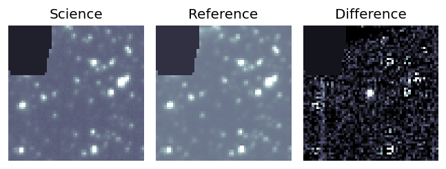
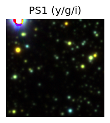
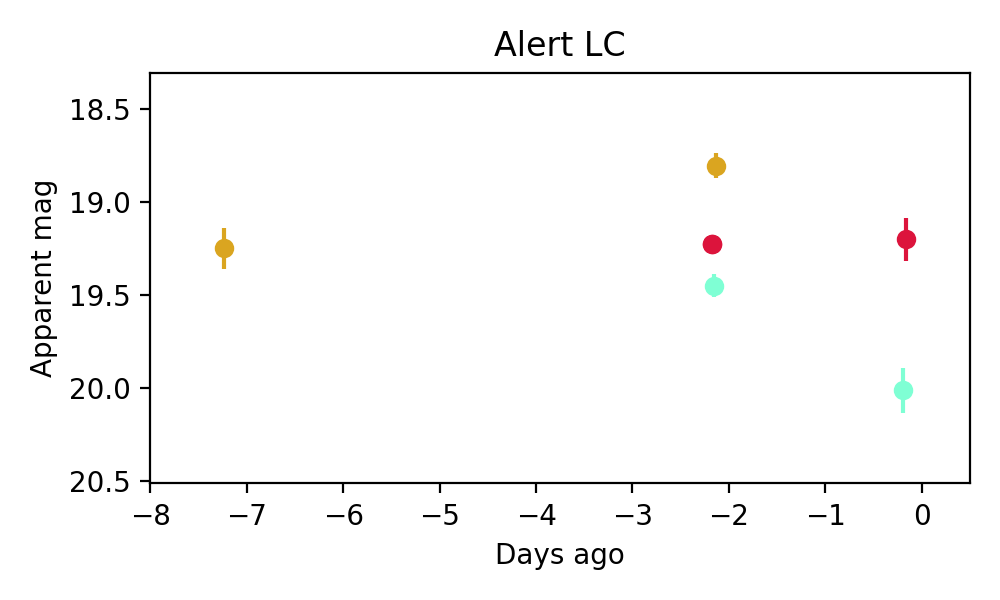
8. ZTF26aasthql (FBOT?) [Back to Top] [Share] [Trigger Swift] [Fritz ] [Lasair ]RA, Dec: 153.33555, -0.00173 10h13m20.53s, 0d 0m-6.22sGalactic (l, b): 241.86242, 43.35262 ext(g-r) = 0.038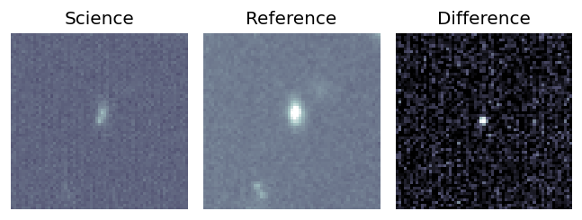
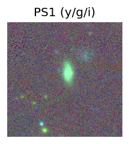
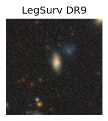
peak abs mag = -19.16 LegacySurvey: 1 sources in 3 arcsec Closest: d = 3.35 arcsec, 329.9 deg (east of north) photoz=0.12 (68% bounds 0.1, 0.13), type=SER peak abs mag = -19.44 (68% bounds -19.03, -19.77) 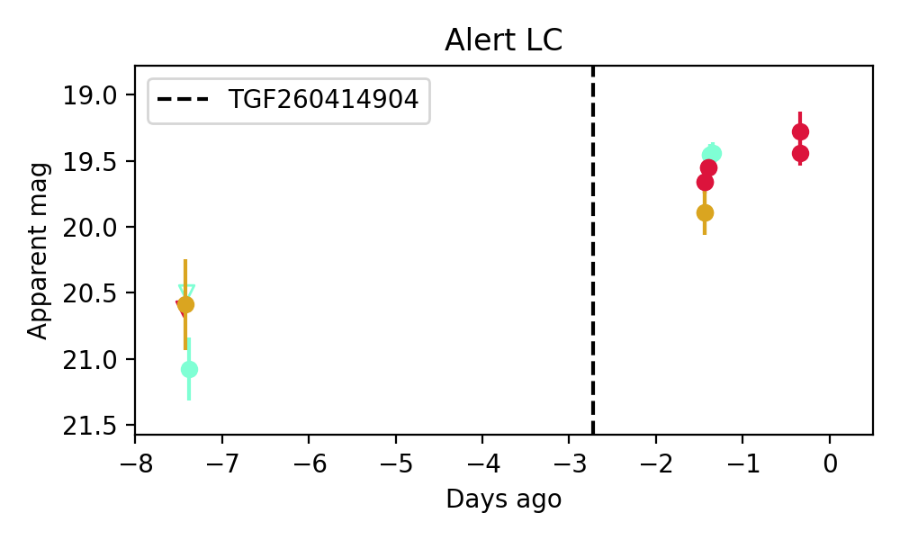
9. ZTF26aasubdy (FBOT?) [Back to Top] [Share] [Trigger Swift] [Fritz ] [Lasair ]RA, Dec: 141.1276, 11.38366 9h24m30.62s, 11d23m1.16sGalactic (l, b): 220.42174, 39.07703 WARNING: -3.65 deg from ecliptic plane ext(g-r) = 0.037peak abs mag = -24.47 LegacySurvey: 1 sources in 3 arcsec Closest: d = 0.11 arcsec, 183.9 deg (east of north) photoz=0.15 (68% bounds 0.09, 0.45), type=DEV peak abs mag = -19.76 (68% bounds -18.47, -22.47)
10. ZTF26aasvrgq (Afterglow?) A ) [Back to Top] [Share] [Trigger Swift] [Fritz ] [Lasair ]RA, Dec: 190.06189, 46.85162 12h40m14.85s, 46d51m5.83sGalactic (l, b): 128.57434, 70.15384 ext(g-r) = 0.017LegacySurvey: 1 sources in 3 arcsec Closest: d = 0.15 arcsec, 323.9 deg (east of north) photoz=0.59 (68% bounds 0.18, 1.12), type=PSF peak abs mag = -27.48 (68% bounds -24.43, -29.17)
11. ZTF26aasvsgb (FBOT?) [Back to Top] [Share] [Trigger Swift] [Fritz ] [Lasair ]RA, Dec: 150.27578, 12.89376 10h 1m6.19s, 12d53m37.52sGalactic (l, b): 223.97052, 47.77541 WARNING: 0.71 deg from ecliptic plane ext(g-r) = 0.036peak abs mag = -23.88 LegacySurvey: 1 sources in 3 arcsec Closest: d = 1.05 arcsec, 206.2 deg (east of north) photoz=0.06 (68% bounds 0.05, 0.11), type=SER peak abs mag = -18.28 (68% bounds -17.69, -19.47)
12. ZTF26aatabbj (Afterglow?) [Back to Top] [Share] [Trigger Swift] [Fritz ] [Lasair ]RA, Dec: 239.15402, 46.44726 15h56m36.97s, 46d26m50.13sGalactic (l, b): 73.59859, 48.95342 ext(g-r) = 0.016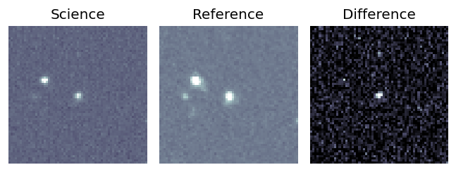
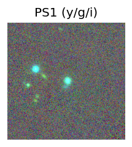
peak abs mag = -18.36 LegacySurvey: 1 sources in 3 arcsec Closest: d = 0.68 arcsec, 238.8 deg (east of north) photoz=0.1 (68% bounds 0.07, 0.13), type=REX peak abs mag = -18.46 (68% bounds -17.81, -19.24) 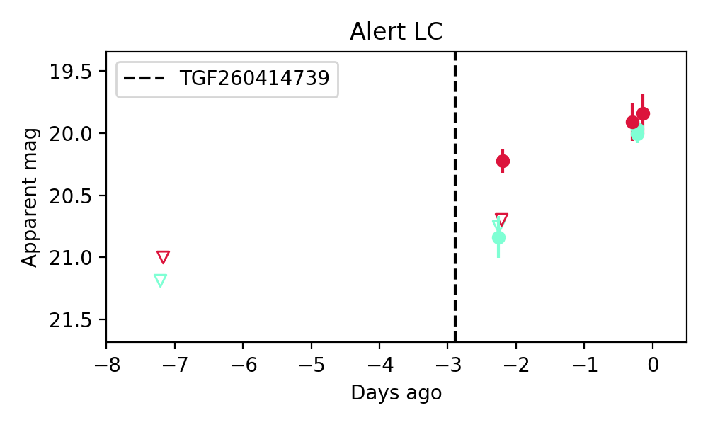
Consistent with synchrotron, g-r>0!
13. ZTF26aatbuhc (FBOT?) [Back to Top] [Share] [Trigger Swift] [Fritz ] [Lasair ]RA, Dec: 250.06904, -10.99287 16h40m16.57s, -10d-59m-34.35sGalactic (l, b): 6.3942, 22.71793 ext(g-r) = 0.319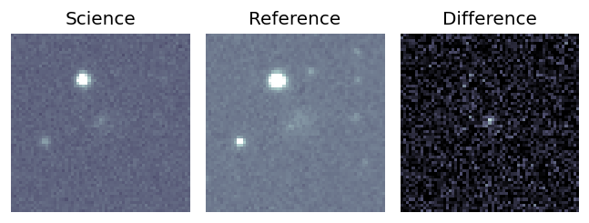
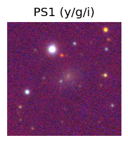
PS1: 1 source in 3 arcsec Closest: d = 2.15 arcsec photoz=0.18+/-0.05 peak abs mag = -20.81 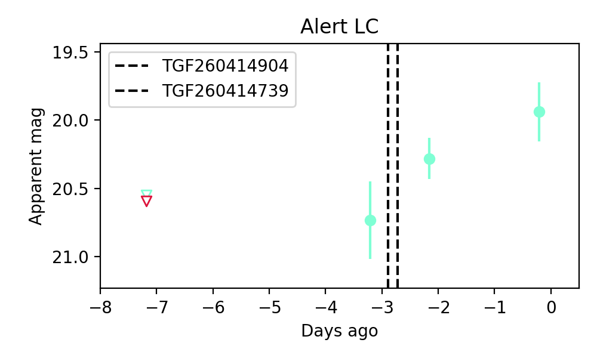